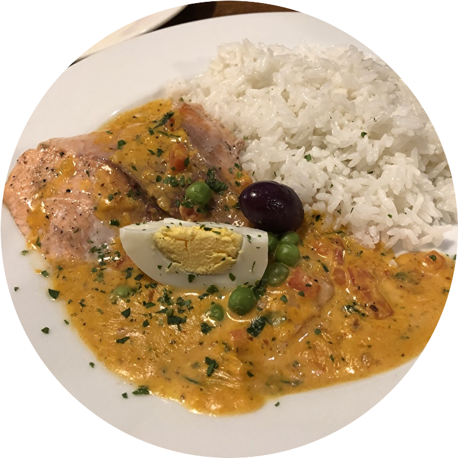
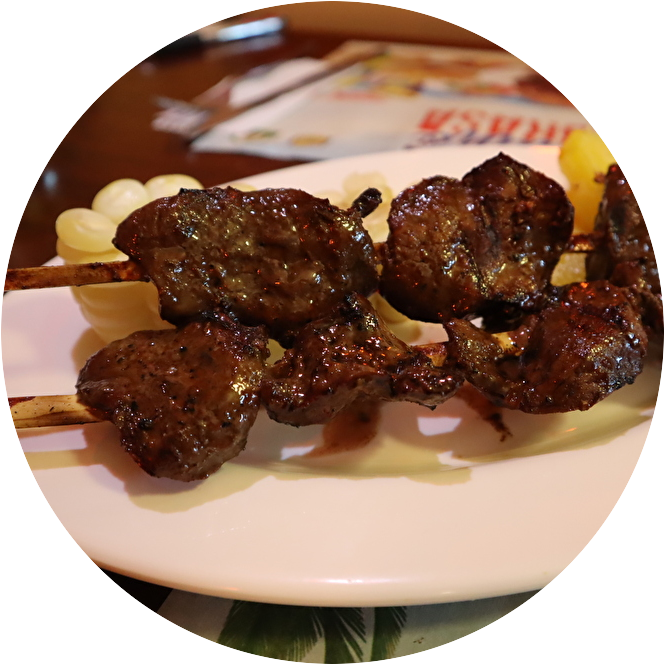
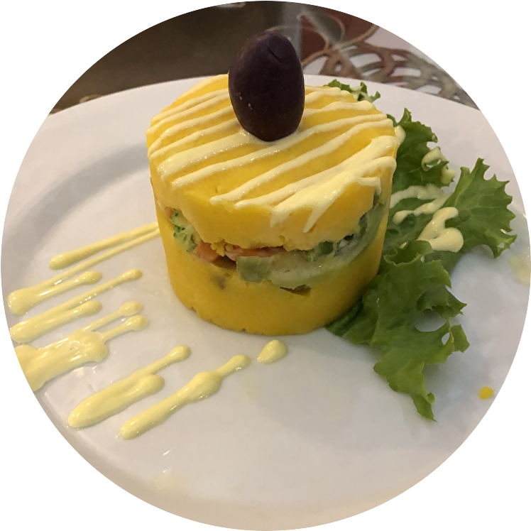
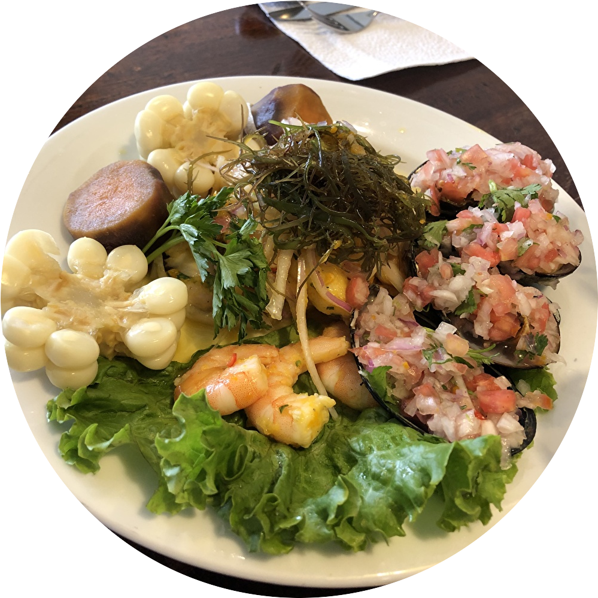
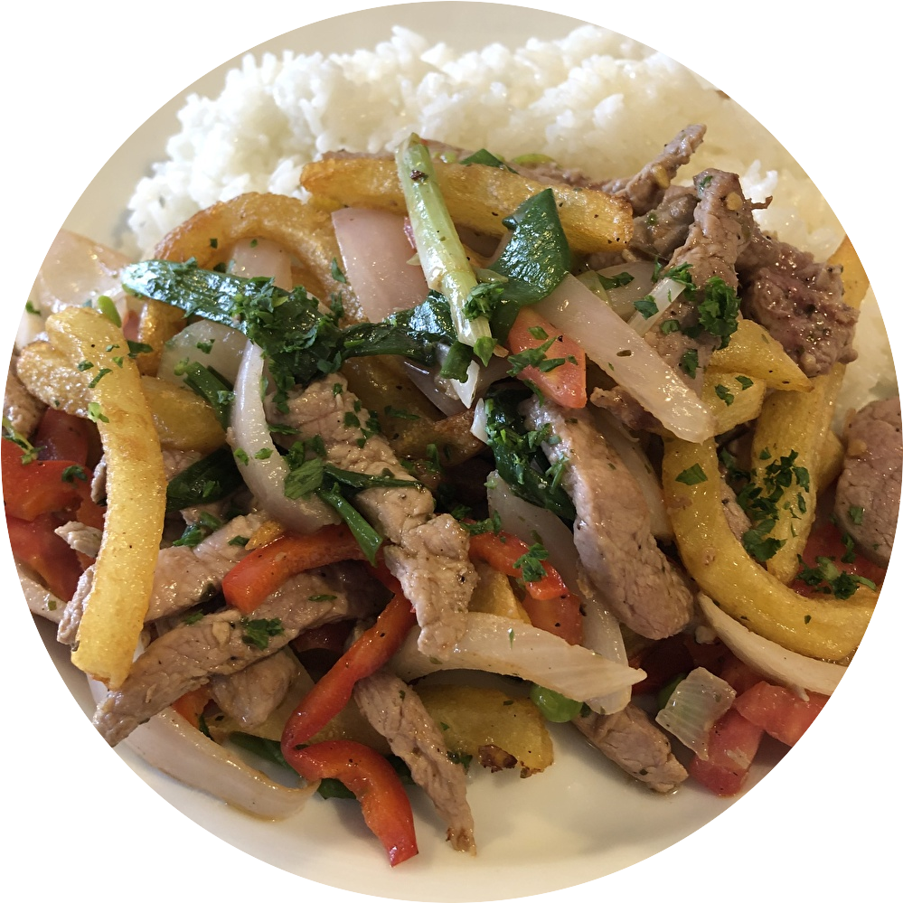
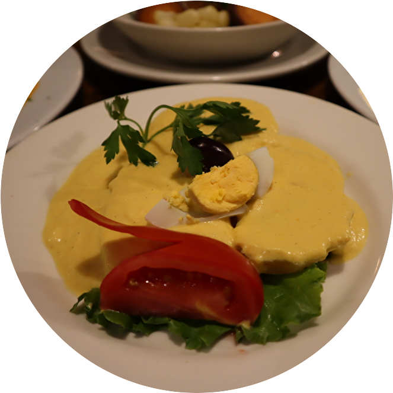
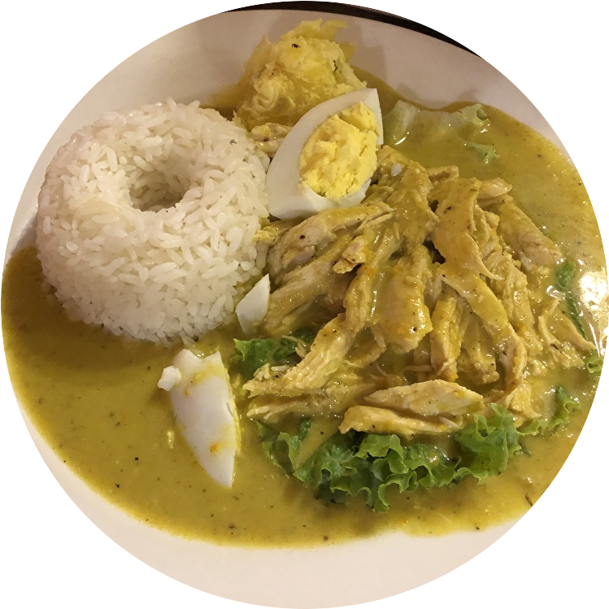
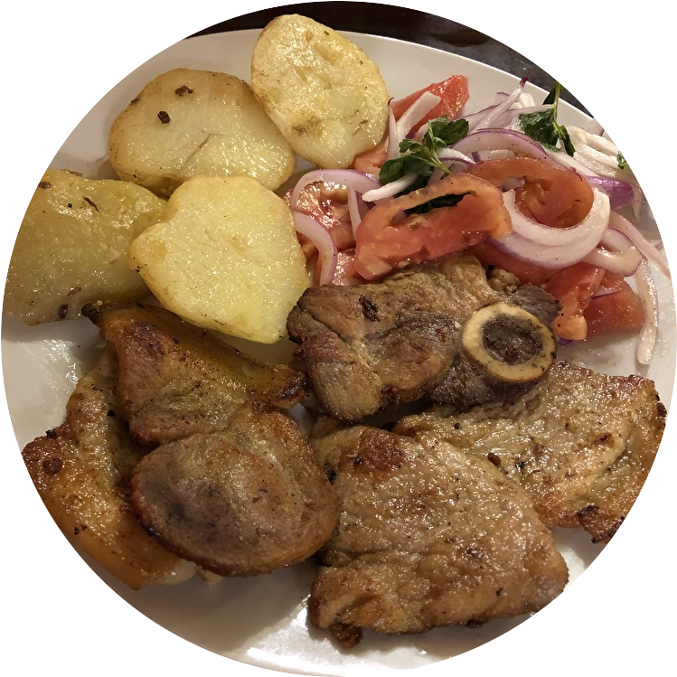
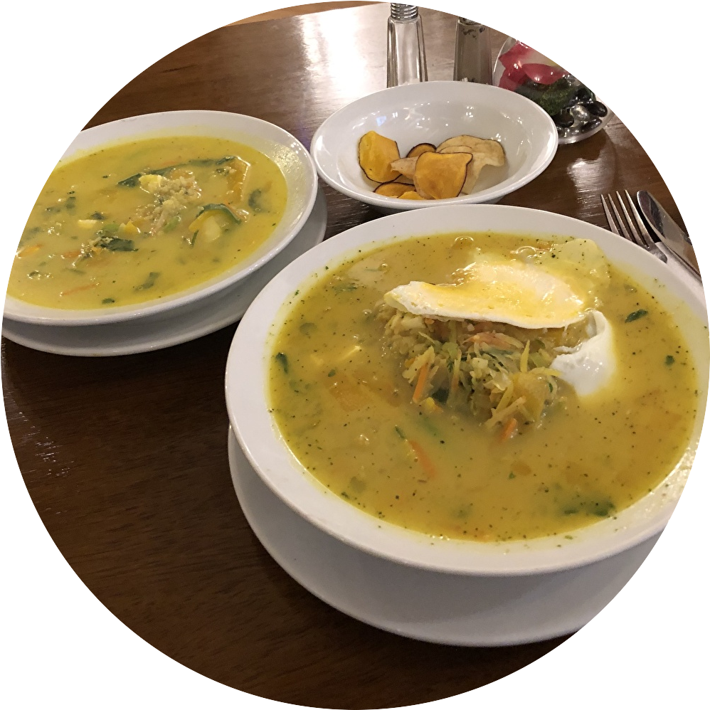
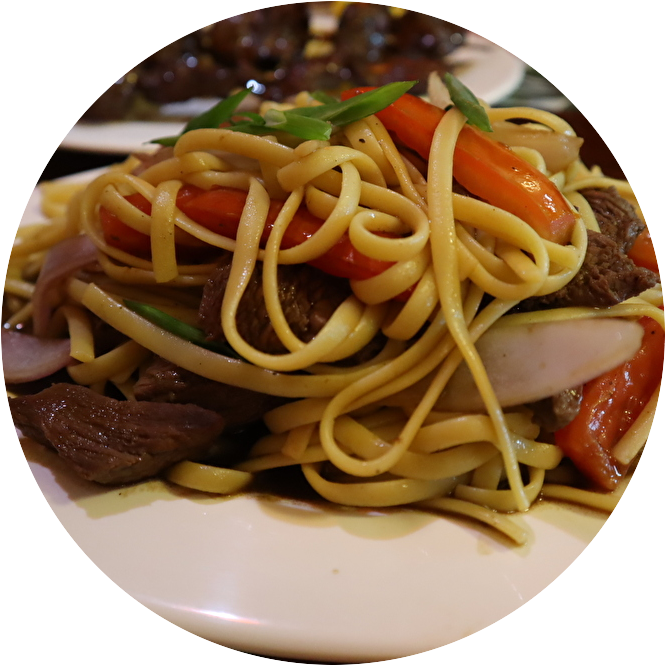

アヒ・デ・カジーナ

Ahi de Gallina
茹でた鶏肉をほぐし、炒めたタマネギとスパイス、チリペーストと合わせたクリーミーなソースを白米にたっぷりかけて食べる
アンティクーチョ

Anticucho
牛のハツ（心臓）にスパイスをたっぷりすり込み、じっくりと焼き上げた串料理
カウサ

Causa
黄トウガラシのペーストを混ぜたマッシュポテトと、鶏肉を重ねたサラダ
セビーチェ

Cebiche
新鮮な魚介のマリネ。レモン・塩・ハーブであっさりとした味付け
ロモ・サルタド

Lomo Saltado
牛肉とタマネギ、トマトを香菜と一緒に炒めたもの
パパ・ア・ラ・ワンカイーナ

Papa a la Huancaina
茹でたジャガイモに、アヒ・アマリージョという黄トウガラシのペーストをかけた料理



